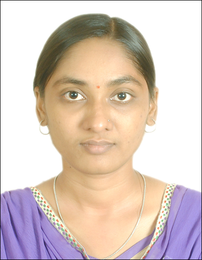

About

"Passionate and innovative speech research engineer
interested in building applications beneficial to society
while shaping new talent towards to the same"
Kamini is Chief Engineer in Audio AI team at Samsung Research Institute Bangalore. She completed her PhD in Speech Processing from Electrical Engineering (IIT Bombay, Mumbai, India). Her thesis work Automatic assessment of fluency in childrens oral reading using prosody modeling with Prof. Preeti Rao later evolved into the TARA app. article in collaboration with Tata Center and LETS project.
Proficient in machine learning, her industry experience is dedicated to adapting and personalizing applications to device-specific needs and noise environments.
Her research interest lies in the following areas:
- Speech Prosody and Phonetics
- Signal Processing and Speech Preprocessing
- Machine Learning and Deep Learning
- Speech Synthesis and Foundational Models
- Speech Recognition and Large Language Models
- Natural Language Processing and Image Processing
She can be contacted at kaminimsabu@gmail.com
Children's Reading Assessment Project thesis
Objective : To develop an application for automatic assessment of children's oral reading for second language; for, but not limited to, native Marathi children of age group 10-14 years reading L2 English.
We collected 3000+recordings of 900+ students from 10+ schools from various regions in Maharashtra as the students read from set of 80 stories.
We formulated the annotation and ratings policy after discussion with 20+ transcribers, raters and teachers.
Further discussions with raters and observations from data has been considered for designing the different system modules.
The project involves various aspects of reading evaluation, viz. lexical accuracy and prosodic fluency.
Speech recognition module used for lexical miscue prediction and
WCPM (words read correctly per minute) determination is a TDNN model trained on speech from Indian English speakers.
The same is adapted for children's speech using the children's read speech we collected.
We also use the vocal track normalization and speech perturbation based data augmentation to improve the performance.
The prosodic flulency evaluation aspect refers to predicting teacher's subjective ratings of fluency and comprehensibility.
We use various hand-crafted prosodic features in random forest classifier framework for the same. The project involves closely working with other project collaborators designing different modules of the overall system.
We achieved 2% improvement in prosodic event detection performance over state-of-the-art through careful feature extraction and selection procedure.
We also achieved further improvement of 10% in predicting the degree of prominence with the use of deep learning architectures and lexical features.
The predicted prosodic events compared with expected prosodic event positions gives prosodic event miscues.
We also designed prosodic features that can flag distinguished speaking-styles like sing-song, cadence, uptalk.
All these were used along with other lexical accuracy related features to predict the high-level expert ratings for comprehensibility and confidence.
We introduced automatic prediction of detecting students with poor fluency and achieved 83% accuracy.
We also introduced automatic prediction of subjective ratings for confidence and comprehensibility of child
using acoustic-prosodic features. We could flag low confidence readers with 82% accuracy.
Others
Some really interesting websites:
For any help regarding web and coding, you can visit
WnCC github
Github also provides facility to make a webpage.
This same website is also accessible from github at
https://kaminisabu.github.io/
In order to change the content of website, I need to go to
https://bighome.iitb.ac.in/index.php/apps/files/?dir=/public_html&fileid=6936483 and
https://github.com/KaminiSabu/kaminisabu.github.io/edit/main/index.md
Python Packages for Data Science:
- Data manipulation <\li>
- Visualization <\li>
- Matplotlib
- Seaborn
- Plotly
- Machine learning <\li>
- Scikit-learn
- Tensorflow
- Keras
- Data scraping <\li>
- Scrapy
- NLP <\li>
- Statistics